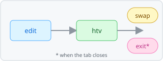

htv test page
This page exercises htv while developing it:
- watch the counter below — the script runs once per swap
- scroll down and back, then edit this file — the swap should preserve your scroll position
- close the tab and the server should exit after ~3 seconds
Script runs: 0
Image from a sibling directory (served via the git root):

Scroll position test area…
Bottom of the page. After an edit-and-swap you should still be reading this at the same scroll offset.